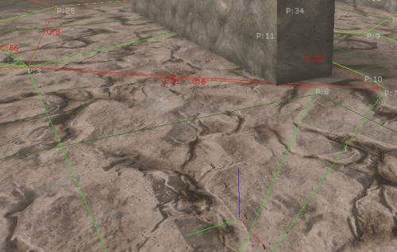

UDN
Search public documentation:
NavigationMeshPathDebuggingJP
English Translation
中国翻译
한국어
Interested in the Unreal Engine?
Visit the Unreal Technology site.
Looking for jobs and company info?
Check out the Epic games site.
Questions about support via UDN?
Contact the UDN Staff
中国翻译
한국어
Interested in the Unreal Engine?
Visit the Unreal Technology site.
Looking for jobs and company info?
Check out the Epic games site.
Questions about support via UDN?
Contact the UDN Staff
ナビゲーションメッシュのパスのデバッグ
概要
パス検出の問題のデバッグは、通常のデータセットのサイズが大きく、パス検出そのものが複雑であるために困難な作業になることがあります。このドキュメントでは、このプロセスにより対処しやすくするために搭載されているツールの概要を説明します。デバッグ時のパスのレンダリング
パスのレンダリングを有効にするには、コンソールコマンド show paths を実行します。これにより、現在ロードされているナビゲーションメッシュ (ナビゲーションメッシュの障害物 (obstacles) によって動的に更新されたメッシュを含む) が描画されます。次のスクリーンショットを見てください。
- レッドのサーフェスは、障壁メッシュサーフェス (AI が通過できないサーフェス) を示しています。
- グリーンのサーフェスは、歩行可能なサーフェス (ナビゲーションメッシュの一部) です。
- ポリゴン間の境界上のパープルの線は、ポリゴン間の接続を示します。隣接する 2 つのポリゴンの間にパープルの線がない場合は、AIs がその片方のポリゴンからもう一方のポリゴンに移動できないことを意味します。
- 他の線は (イエローの点線など) 異なるエッジタイプを表します。このケースでは、イエローの点線はカバースリップのエッジを示しています。
- bDrawEdgePolys - TRUE の場合、エッジの中心から、そのエッジがリンクする 2 つのポリゴンの中心まで線を引きます。どのエッジにどのポリゴンが実際にリンクされているのかをデバッグするのに便利です。次図はこのオプションをオンにしたときのスクリーンショットです。

- bDrawPolyBounds - TRUE の場合、各ポリゴンの計算上のバウンダリを示すイエローのワイヤーボックスが描かれます。次図はスクリーンショットのサンプルです。

bDebugConstraintsAndGoalEvals
ナビゲーションハンドル (navigationhandle) にはブール型パラメータが存在します。これを TRUE に設定すると、そのナビゲーションハンドルのパス検出により、パス検索に関する統計が出力されます。 以下は、bDebugConstraintsAndGoalEvals を TRUE に設定し、簡単で一番短いパス検索を行った場合の出力サンプルの一部です。[0515.02]Log: ------- PATH CONSTRAINT STATS -------- [0515.02]Log: Processed: 43 ThrownOut: 0 (0.00% thrown out) AddedPathCost: 0.00 (0.00% total) AddedHeuristic: 0.00 (0.00% total) - (NavMeshPath_MinDistBetweenSpecsOfType_0) [0515.02]Log: Processed: 43 ThrownOut: 0 (0.00% thrown out) AddedPathCost: 0.00 (0.00% total) AddedHeuristic: 175.00 (100.00% total) - (NavMeshPath_Toward_0) [0515.02]Log: -------------------------------------- [0515.02]Log: TotalThrownOut: 0 TotalAddedDirectCost: 0.00 TotalAddedHeuristicCost: 175.00 [0515.02]Log: ------- GOAL EVALUATOR STATS -------- [0515.02]Log: Threw Out 10 (out of 11 processed (90.91%)) (Responsible for 100.00% of all nodes thrown out) - NavMeshGoal_At_0 [0515.02]Log: ---------------------------------------この出力結果から、たくさんの情報が得られます。例えば、正しく機能せず、すべてのノードをはねつける (throw out) コンストレイントがパスのコンストレイントリストに含まれている場合、この統計を調べることで、それが不正な振る舞いをしていることを確認できます。どのコンストレイントがコストを増やしているかに関する情報も出力されるので、パス検索への影響が最も大きいコンストレイントなども分かります。
bUltraVerbosePathDebugging
注意: このコードは QA_APPROVED_BUILD_DEC_2009 (2009 年 12 月 QA 承認ビルド) に含まれており、CL 408369 と一緒にチェックインされました。 まだ何が起こっているか、エンティティがどうして特定の場所を通過できないのか分からないときには、bUltraVerbosePathDebugging をオンにします。これを有効にすると、有効な AI が次にパス検出を行うときに画面にデバッグ情報を表示するだけでなく、画面情報に対応するキーを含む詳細な情報をダンプします。 画面のデバッグ情報によって、トラバーサルの全体的な形を把握し、パス検出がどこに進みどのノードを調べたかを理解することができます。画面のタグを使って、特定のイベントに関するより詳細な情報を得ることもできます。 次図のスクリーンショットを見てください。
- レッドの線 - パスステップを実行したが拒否されたことを示します。
- レッドのテキスト - 失敗したトラバーサルに対応する、ログの出力行のキーです。例えば、AI が通過できないエッジに C:21 があり、通過できない理由を知りたい場合は、ログウィンドウで C:21 を検索するとその理由が分かります。次は対応するログ行のサンプルです。
[0061.15]Log: PATH_DEBUG_MESSAGE[C:21]: Edge does not support this entity (supports returned FALSE) Edge: FNavMeshEdgeBase (Len:30.00 EffecLen:30.00)
- クリーンの線 - 1 つのポリゴンから別のポリゴンへのトラバーサルに成功したことを意味します。
- 白いテキスト - 失敗した (終了していない) EvaluateGoal の呼び出しに対応する、ログの出力行のキーです。次は対応するログ行のサンプルです。
[0061.15]Log: Poly (P:16) (polyctr:X=13905.000 Y=-13110.000 Z=129.000) was just given status [EvaluateGoal returned 0] by NavMeshGoal_At_0
- DebugCoordinateSystem - SearchStart 時に描かれます。
[0132.83]Log: PATH_DEBUG_MESSAGE[C:22]: Edge does not support this entity (supports returned FALSE) Edge: FNavMeshCoverSlipEdge (Actor: CoverLink_8 RelItem: 0 MoveDir: -1)次の図は、デバッグモード実行中のより大きな範囲の画像を示しています。

このモードでは、各パスステップのワーキングセットのサイズや、パス検索が終了した理由などをはじめとするその他の関連情報も多量にログに出力されます。以下の出力サンプルの一部です。
[0132.82]Log: Poly (P:108) (polyctr:X=12828.750 Y=-15367.500 Z=-127.000) was just given status [EvaluateGoal returned 0] by NavMeshGoal_SquadFormation_0 [0132.82]Log: PATH_DEBUG_MESSAGE[C:221]: Path constraint NavMeshPath_WithinTraversalDist_0 EvaluatePath rejected this edge! Edge: FNavMeshEdgeBase (Len:60.00 EffecLen:90.00) [0132.82]Log: PATH_DEBUG_MESSAGE[C:222]: Edge does not support this entity (supports returned FALSE) Edge: FNavMeshEdgeBase (Len:15.00 EffecLen:30.00) [0132.82]Log: PATH_DEBUG_MESSAGE[C:223]: Edge does not support this entity (supports returned FALSE) Edge: FNavMeshEdgeBase (Len:15.00 EffecLen:30.00) [0132.82]Log: +++Finished path step 108!, Openlist now has 2 nodes in it. [0132.82]Log: Poly (P:109) (polyctr:X=12105.000 Y=-13860.000 Z=127.750) was just given status [EvaluateGoal returned 0] by NavMeshGoal_SquadFormation_0 [0132.82]Log: PATH_DEBUG_MESSAGE[C:224]: Path constraint NavMeshPath_WithinTraversalDist_0 EvaluatePath rejected this edge! Edge: FNavMeshEdgeBase (Len:60.00 EffecLen:90.00) [0132.82]Log: PATH_DEBUG_MESSAGE[C:225]: Edge does not support this entity (supports returned FALSE) Edge: FNavMeshEdgeBase (Len:15.00 EffecLen:30.00) [0132.82]Log: +++Finished path step 109!, Openlist now has 1 nodes in it. [0132.82]Log: Poly (P:110) (polyctr:X=13800.000 Y=-14482.500 Z=-127.000) was just given status [EvaluateGoal returned 0] by NavMeshGoal_SquadFormation_0 [0132.82]Log: PATH_DEBUG_MESSAGE[C:226]: Path constraint NavMeshPath_WithinTraversalDist_0 EvaluatePath rejected this edge! Edge: FNavMeshEdgeBase (Len:60.00 EffecLen:120.00) [0132.83]Log: PATH_DEBUG_MESSAGE[C:227]: Edge does not support this entity (supports returned FALSE) Edge: FNavMeshEdgeBase (Len:15.00 EffecLen:30.00) [0132.83]Log: PATH_DEBUG_MESSAGE[C:228]: Path constraint NavMeshPath_WithinTraversalDist_0 EvaluatePath rejected this edge! Edge: FNavMeshEdgeBase (Len:60.00 EffecLen:120.00) [0132.83]Log: PATH_DEBUG_MESSAGE[C:229]: Path constraint NavMeshPath_WithinTraversalDist_0 EvaluatePath rejected this edge! Edge: FNavMeshEdgeBase (Len:75.00 EffecLen:105.00) [0132.83]Log: PATH_DEBUG_MESSAGE[C:230]: Edge does not support this entity (supports returned FALSE) Edge: FNavMeshCoverSlipEdge (Actor: CoverLink_48 RelItem: 0 MoveDir: -1) [0132.83]Log: +++Finished path step 110!, Openlist now has 0 nodes in it. [0132.83]Log: +++++++++ STOPPING PATH SEARCH -- Nodes on openlist: 0 Reason: Path finished, and DetermineFinalGoal returned TRUE.. search was a success!上記のデバッグ方法に加えて、実行時にゲーム内の特定の AI 上でこのデバッグモードを簡単に有効にすることができるツールも用意しました。 VerbosePathDebug は、プレーヤーがどこから見ているかたとり着くために実行できるコンソールコマンドで、これを実行するにはパス内にある任意のポーンの bUltraVerbosePathDebugging を true に設定します。 特定の AI でこのブールオプションをオンにしてその AI がパス検出を終了すると、新しい情報のために前の ultraverbose (超詳細な) デバッグ情報がクリアされ、ゲームは playersonly モードになり、その間を利用して情報を検討することができます。1 つのフレーム内で複数のパス検出が発生する場合、画面に表示される内容は最後のパス検出に関する情報であることに注意してください。